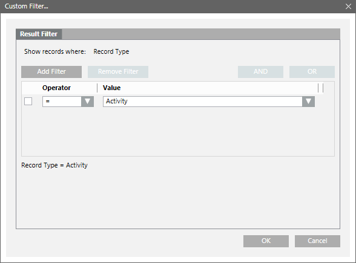
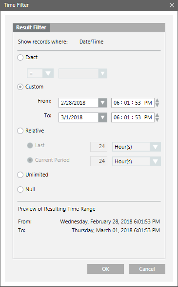

Applying Filters on the Detailed Log Tab
In the Detailed Log tab, you can apply filters on date time as well as non-date time columns.
Apply Filters on Non-DateTime Columns
You can apply a result filter on the data set displayed in the Detailed Log tab using any of the following techniques.
When you apply a Result Filter on a column, a filter icon displays in the column header indicating that a filter is applied on the column.
Custom Filter
- Right-click the data value for which you want to apply the filter.
- Select Custom Filter.
- The Custom Filter dialog box displays.

- Click the Result Filter tab.
- Click the Add Filter button.
- An empty row with the Operator and Value fields displays.
- Specify the operator by selecting values from the Operator and Value drop-down list.
NOTE: To add a filter for User column, ensure that you type a user value including double backslash. For example write the value as "[DomainName]\\[UserName]". - The filter expression displays in the Filter Expression field.
- Click OK.
- The result filter is applied to the data set.
Quick Filter
- Right-click the data value for which you want tCustom Filtero apply the filter.
- Select the Filter By option.
- The last three filters applied on a column are listed as menu options that display when you right-click a data value.
You can also apply a quick filter by selecting any of these options.
Selection Filter
The selection filter is applicable for filtering ENUM type of data. See List of ENUM columns section in Custom Filter for a list of columns of type ENUM.
Perform the following steps to apply the selection filter:
- Click the inverted arrow on any column displaying ENUM data.
- The list of data entries for the column display as menu items.
- Select the check box pertaining to the entry on which you want to apply the filter.
NOTE: For faster retrieval of the data entries, you can type the value of the entry to be retrieved in the text box above the selection filter. - Click OK.
- The view displays the data filtered on the basis of the selected entry.
NOTE: If you select more than one data entry, the system displays the data matching either of the selected entries.

NOTE:
If you apply a Result Filter on a column with an existing result filter, the new filter condition replaces the older condition. In order to apply Result Filter on Previous Value and Value column, enclose the value entered in the Value text field within double quotes, if it is in the 2E63 to 2E64-1 range. In the absence of Show rights, the Value drop-down list displays all the corresponding event categories when you apply a Result Filter on the Event Category column. The records of only those event categories display whose Show rights have been granted, after a Result Filter is applied on the Event Category column.
Apply Filters on DateTime Columns
You can apply a result filter on the columns displaying date/time data using any of the following techniques:
- Custom Filter
- Date Filters
- Quick Filter
Custom Filter
- Position your cursor over a column with date-time data, such as Date/Time.
- Right-click and select Custom Filter.
- The Time Filter dialog box displays.

- Click the Result Filter tab.
- Specify the appropriate date/time values in the Exact, Custom, or Relative options.
NOTE: By default, the Unlimited option is selected in the Time Filter dialog box. If you want to view records having NULL as the value, select the Null option. - A preview of the date/time values you specified displays in the Preview of Resulting Time Range section.
- Click OK.
- The Detailed Log refreshes automatically and the data corresponding to the specified date time values displays.
NOTE: If you specify a date in the Exact option, the data corresponding only to the specified date displays.
Date Filters
Using the Date Filters option, you can retrieve data for the current day, previous day, current week, previous week, current month, previous month, current year, or previous year.
Perform the following steps to retrieve the data for the required time period.
- Click the drop-down arrow on any column displaying date/time data, for example, Date/Time. A list of menu options displays.
- Position your mouse pointer over Date Filters. A list of options to filter the data on the basis of the current day (Today), previous day (Yesterday), current week (This Week),
previous week (Last Week), current month (This Month), previous month (Last Month), current year (This Year), or previous year (Last Year) displays. - Select the required option. The Detailed Log refreshes and displays the data according to the selected time option.
Quick Filter
Perform the following step to apply a quick filter:
Right-click the data entry corresponding to the date time value for which you want to apply the filter and select Filter By.
The Detailed Log refreshes and displays the entries corresponding to the selected date.
NOTE:
The last three filters applied on a column are listed as menu options that display when you right-click a data value. You can also apply a quick filter by selecting any of these options.